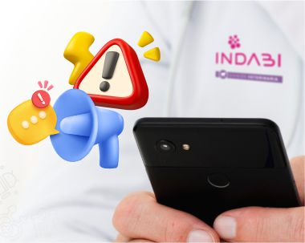
Comunicación oportuna de resultados críticos
Hay resultados que no pueden esperar. Por eso priorizamos la comunicación oportuna de hallazgos críticos para favorecer una intervención clínica más rápida y segura.
Incorporamos tecnología que te permite ver los resultados cuando los necesitás, de forma ágil, clara y disponible para acompañar decisiones clínicas oportunas.
Acceso a resultados online
Más que un resultado: sumamos acompañamiento profesional para discutir hallazgos, orientar la interpretación y respaldar la toma de decisiones en cada caso.
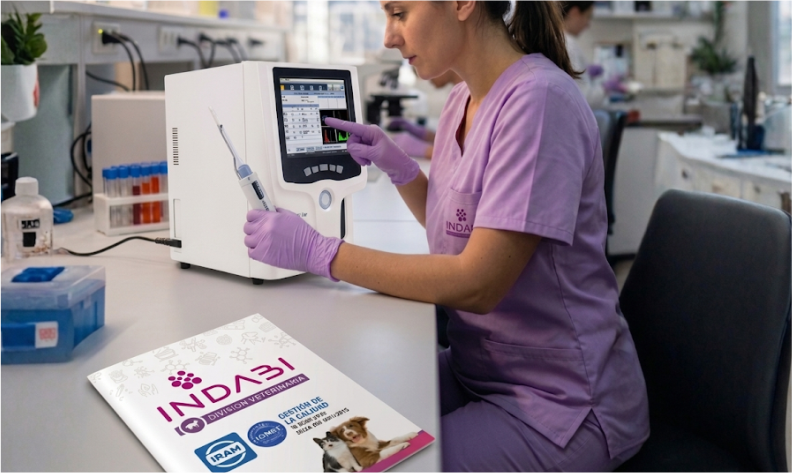

La calidad también se demuestra en los procesos. Ampliamos el alcance de la norma y certificar ISO 9001 en nuestra INDABI División Veterinaria refuerza el compromiso con la consistencia, la mejora continua y la confianza de cada profesional.
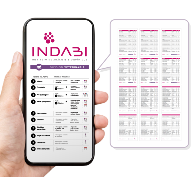
Seguimos ampliando nuestra capacidad diagnóstica para responder mejor a la práctica veterinaria de todos los días, con una oferta analítica cada vez más completa y mejor organizada.
Ver el listado actualizado

Hay resultados que no pueden esperar. Por eso priorizamos la comunicación oportuna de hallazgos críticos para favorecer una intervención clínica más rápida y segura.
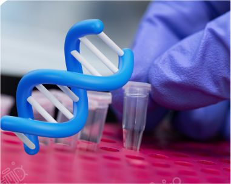
Incorporar biología molecular y PCR amplía las herramientas diagnósticas para enfermedades infecciosas y otras situaciones complejas, con métodos de alta sensibilidad y especificidad.

La calidad empieza en el origen. La correcta identificación y seguimiento de cada muestra es clave para sostener trazabilidad, seguridad y confianza en cada resultado.
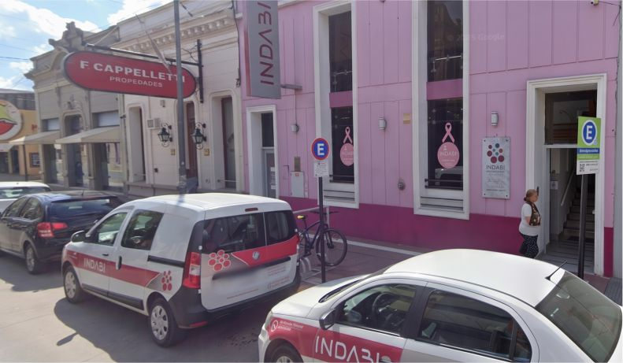
Un laboratorio disponible cuando la práctica lo necesita hace la diferencia en el día a día.

Escuchar, revisar y mejorar. El intercambio permanente con veterinarias de la ciudad y la región es parte de una forma de trabajo enfocada en calidad, cercanía y evolución continua.
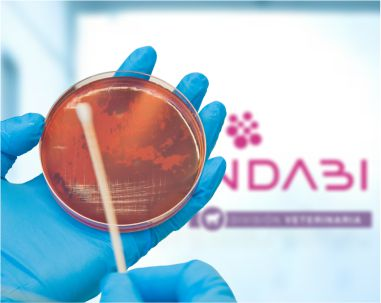
En microbiología veterinaria, adaptar técnicas e interpretación a las necesidades reales de la práctica es esencial para que el informe sea clínicamente útil y verdaderamente accionable.

Lo hacemos más simple, rápido y confiable. Retiramos las muestras ingresadas y rotuladas directamente de tu veterinaria de lunes a viernes a las 11 hs. y 18 hs., y los sábados a las 11 hs., garantizando agilidad, seguridad y trazabilidad en cada paso.

Incorporamos el analizador URIT Vet para realizar un hemograma específico para especies animales, brindando mayor precisión y velocidad en el diagnóstico.
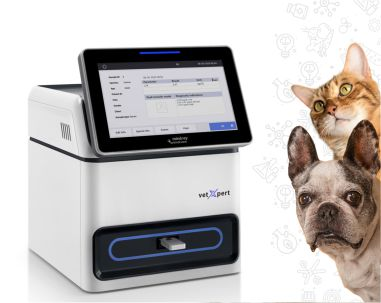
Resultados precisos en minutos con el nuevo analizador VETXPERT 13. Ideal para evaluar hormonas específicas y marcadores. Un solo equipo, múltiples diagnósticos.
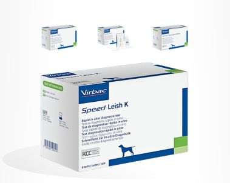
Cuando el tiempo importa, una respuesta ágil también cuenta. Los tests rápidos suman valor en la práctica diaria al acercar información útil para decidir con mayor inmediatuz.
Realizamos PCR para Leishmania en nuestro laboratorio de Biología Molecular, pudiendo así acortar los tiempos y adaptarnos al nuevo requisito de SENASA para viaje al exterior.

La anatomía patológica suma profundidad diagnóstica y valor clínico en biopsias y tejidos, aportando información clave para confirmar y comprender mejor cada proceso.
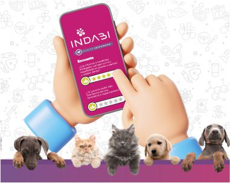
Escuchar, revisar y mejorar. El intercambio permanente con veterinarias de la ciudad y la región es parte de una forma de trabajo enfocada en calidad, cercanía y evolución continua.

Crecer en articulación con la universidad fortalece el desarrollo regional, la extensión, pensando el futuro y la construcción de nuevas capacidades al servicio de la veterinaria.

Contar con la posibilidad de desarrollar estas técnicas localmente acorta los tiempos diagnósticos y permite el acceso a resultados más oportunos.
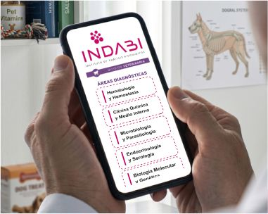
Un listado de prestaciones renovado y estructurado de forma práctica para facilitar la solicitud de estudios según la especialidad y necesidad.

Incorporamos y actualizamos instructivos prácticos para facilitar la preparación, toma y conservación de las muestras y acompañar la labor diaria del profesional.
Consideraciones generales para envío de muestras
Resolvemos el envío de muestras patológicas con el Laboratorio Duchenne, garantizando un servicio integral.
Controles fisicoquímicos y bacteriológicos para asegurar la calidad del agua en clínicas, hogares y establecimientos agropecuarios.
Conocé División Aguas e Industrias